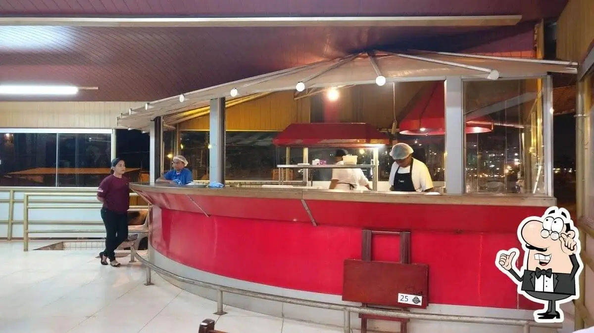

A cozinha da Parmegiana do Juca

Na Parmegiana do Juca, esse é o canto onde a magia acontece, nossa fornalha é o coração pulsante da cozinha. Ela crepita e dança, transformando ingredientes frescos em obras-primas douradas e borbulhantes. É ali que cada parmegiana ganha sua crosta irresistível e seu recheio que derrete na boca. Um forno que abraça sabores, exalando aromas que contam histórias de tradição e paixão. Mais que um forno, é a alma do sabor do Juca!